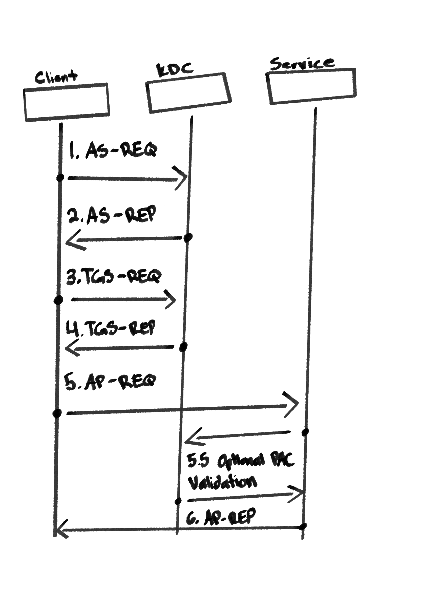

Appendix C: A Primer on Kerberos
How it Works
Kerberos replaces the New Technology LAN Manager (NTLM) as the default domain authentication protocol since Windows 2000. It works on a system of ticets, where principals (users and computers) are authenticated by a central, trusted server, granting them access to services without needing to provide their password over and over again. Kerberos doesn't require that end services know the principal's password. It assumes that there is no transport encryption on the network and that packets can be read/modified/replayed. Therefore, it relies on shared-secret cryptography to establish a trust relationship with clients.
The Key Distribution Center (KDC) is the trusted source for kerberos authentication that consists of three sub components:
- A database of all principals and their associated secrets (i.e., password hashed)
- An Authentication Server (
AS) - A Ticket Granting Server (
TGS)
In a Windows domain, it's the domain controllers that act as the KDC, as every principal and their password hashes are stored in Active Directory.
A Ticket Granting Ticket (TGT) is provided to a principal after their identity has been verified by the AS. It is used in lieu of a principal having to provide their password every time they want to use a service. Each service can be identified by a forest unique Service Principal Name (SPN), which should be in the following format:
<service class>/<host>:<port>/<service name>
The SqlServer, www for a web server, or ldap for a Lightweight Database Access Protocol server. The
A service ticket is a component returned from the TGS in response to a request to access a service using kerberos authentication. A TGT is sent to the KDC as evidence that their identity has been verified.
A Privileged Attribute Certificate is a structure that can be attached to a ticket, which contains additional information about a principal. When a ticket is issued from a Windows Domain Controller, it will populate the PAC with information about the principal from Active Directory. This can include their:
- Resource ID (
RID) - Domain Group Membership
- User Account Control Information
When presenting a service ticket to a service, the service is able to inspect the PAC to determine the user's privileges without having to query it from AD.

Kerberos Authentication Overview
Basically, Kerberos Authentication can be broken up into 3 phases:
Phase 1: Authentication
-
AS-REQ (Authentication Service Request) The Client sends a message to the KDC saying, "I am User X, and I want to log in." This request is partially encrypted using a hash of the user's password.
-
AS-REP (Authentication Service Response) The KDC verifies the user's identity. If successful, it sends back a TGT. The TGT is encrypted with the KDC's own secret key (so the client cannot tamper with it). The client now has proof of identity that it can use for the rest of the session.
Phase 2: Authorization
-
TGS-REQ (Ticket Granting Service Request) At this point, the Client wants to access a specific Service. It sends the TGT back to the KDC, authenticating itself and requesting access to that specific Service.
-
TGS-REP (Ticket Granting Service Response) The KDC validates the TGT. If valid, it issues a Service Ticket. This ticket is encrypted using the Service's secret key. The Client cannot read it, but the Service will be able to.
Phase 3: Service Access
- AP-REQ (Application Request) The client sends the Service Ticket to the Service to request access. The Service decrypts the ticket using its own secret key to verify the user's identity.
5.5 Optional PAC Validation The Service asks the KDC to verify the PAC in order to ensure it's authenticity and prevent privilege escalation attacks using forged PAC.
- AP-REP (Application Response) The Service confirms the connection to the Client. This completes the Mutual Authentication. The Client knows the Service is real, and the Service knows the Client is real, establishing the connection.
Delegation
Sometimes, services need to act on behalf or a user to interact with other back end resources. Delegation describes the method used to facilitate this type of interaction. There are two types. When Unconstrained Delegation is implemented, the server receives the ticket, extracts the user's TGT, and caches it in its memory (LSASS). The server can now use that TGT to impersonate the user to any service on the network. If an attacker compromises a server with Unconstrained Delegation, they can dump the memory to steal the TGTs of any administrator who connects to it (i.e., a Domain Admin performs maintenance on the box -> Attacker steads DA TGT -> Attacker owns the domain). This is considered highly insecure today.
The more secure method, Constrained Delegation, was introduced in Windows Server 2003 to fix the security risks of Unconstrained Delegation. The service is strictly limited in where it can send the user's credentials. The Domain Admin specifies exactly which SPNs the middle-tier server is allowed to access on behalf of the user.
When a user authenticates to a service with Constrained Delegation enabled, the user gets a Kerberos TGT and the Service receives a forwardable ticket. With this, the service can request service tickets from allowed SPNs.
Services with Constrained Delegation enabled can implements additional extensions. For instance, S4U2Self (Service-for-User-to-Self) allows the configured service to ask for a ticket to itself on behalf of the client, even if the user did not authenticate using Kerberos. Essentially, this allows services to grant trusted users access to to themselves by performing a Protocol Transition, converting a non Kerberos authentication into a valid Kerberos ticket. Another example is S4U2Proxy, which allows the service to use a S4U2Self ticket to access another service as the user. On services with Constrained Delegation enabled, the KDC will verify whether the S4U2Proxy service is allowed to delegate users to the requested service and whether the provided ticket is authentic. If it is, a new ticket is granted allowing the original service to act as a proxy for the authenticated user on the secondary service.
Attacking Kerberos
Attackers may attempt to exploit Kerberos to impersonate legitimate users within a domain. Here, we will review a few of those techniques and if possible, how they are mitigated.
Silver Tickets
A Silver Ticket is a forged Service Ticket. This allows an attacker to authenticate directly to a given service, without authenticating with the *Domain Controller
Additional Resources
More information about Kerberos can be found here. To Learn more about Delegation, visit this link here. You can find thread intelligence on attacking kerberos, visit the following links on Mitre:
More information on Diamond and Sapphire Tickets can be found here.